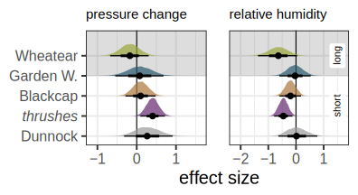

Migration timing during spring depends on migration strategy, while individual adjustments of migratory decisions are similar.

 *
*

1 Institute of Avian Research “Vogelwarte Helgoland”
2 Institute for Biology and Environmental Sciences, Carl von Ossietzky University Oldenburg
Bird migration is defined by a sequential series of trade-off decisions, including departure, routing, and landing decisions. In combination, these three aspects shape the spatio-temporal patterns of an individual movement, and are thus directly linked to the distance travelled per time unit and to energy consumptions, i.e. cost of transport under variable environmental conditions. (Schmaljohann, Eikenaar, and Sapir 2022).
Individual migratory decisions during autumn migration likely depend on migration strategy, i.e. long- vs. short- to medium-distance migrants, and birds of both strategies differently react to prevailing environmental conditions at stopover (Packmor et al. 2020). However, it remains unclear whether migration strategy similarly affects the adjustment of migratory decisions during spring, when early arrivals at the breeding grounds should be mutually beneficial for individual reproductive fitness.

We equipped 289 birds of seven songbird species from both migration strategies with radio tags at coastal stopover sites along the German North Sea coast during spring. Once departed, birds could either cross the German Bight or take a detour along the coast. Using a hierarchical multistate model, we estimated weather effects on daily migratory decisions, i.e. day-to-day departure decisions in concert with routing.

Mean departure probability and mean probability for offshore flights per species group and migration strategy during spring. The overall means are indicated by horizontal lines.

Birds more likely departed under westerly winds (easterly winds in Northern Wheatears) and light southerly winds.
 

Routing was predicted by both wind components with higher probabilities for an offshore flight under easterly and southerly (offshore) winds peaking at low wind speeds.
Birds that followed the coastline departed 0.7 days (-1.8–3.1 days) later than birds that flew offshore. Within the day of departure, onshore flights started 5.6% of night length (2.1–9.2 %) later compared to offshore flights.
We show that departure probability is related to migration strategy during spring, but found no consistent differences in reaction norms to prevailing environmental conditions between strategies. Our results suggest that migration timing during spring inherently depends on migration strategy while individual weather related adjustments of migratory decisions are similar between migration strategies. These findings enable a better understanding of migration ecology in general and help to link migratory decisions to individual fitness.
*
Arrival latitudes of songbirds after leaving coastal stopover sites in north-western Germany. a) Map indicating locations of tag deployment (triangles) and receiver stations where birds arrived after a endurance flight (dots, size equals to the number of individuals). The histogram on the left summarises the number of individuals detected per 0.1°. Offshore detections on Helgoland and FINO3 are given in light colours. Dashed black line indicates threshold latitude and longitude for flight categorisation as offshore (to the left) or onshore (to the right) flight. b) Bean plots of arrival latitudes per species and departure state. Extension of the bean plots represent kernel density estimations of the distribution of individual arrivals, given as small lines in the plot. Broad lines represent the mean arrival latitude per group and the overall average is given by a dashed line.
*